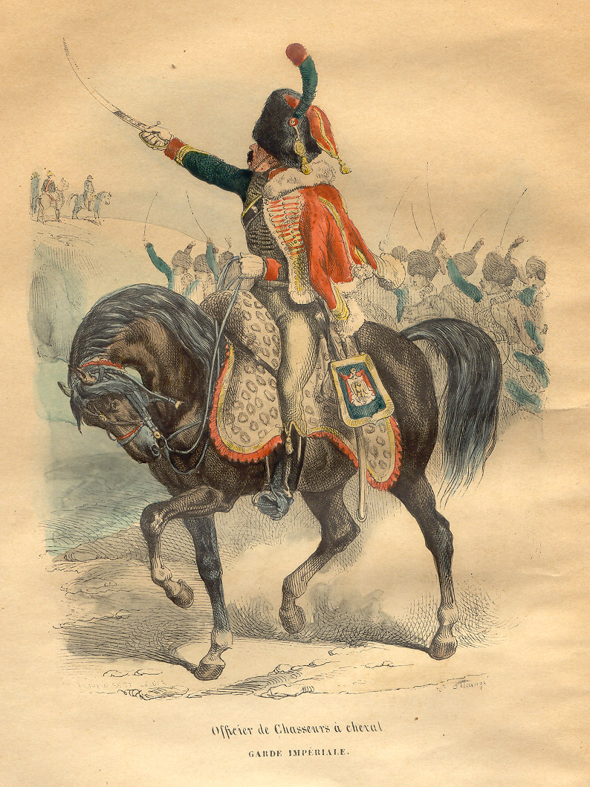

보로디노 전투 (2) - 나폴레옹은 대체 왜 그랬을까
게시: 2020-08-06T06:30:47+09:00
9월 5일 이른 아침, 콜로츠코예(Kolotskoie)의 작은 수도원에 도착한 뮈라의 정찰대는 나지막한 구릉 위에서 전투 준비를 갖추고 있는 러시아군을 발견했습니다. 뮈라는 당연히 나폴레옹에게 이 사실을 알렸고, 러시아군이 후퇴를 멈추고 땅을 파고 있다는 소식에 나폴레옹은 어깨춤을 들썩이며 한달음에 달려왔습니다. 나폴레옹이 수도원에 도착했을 때는 정오 무렵이었고 마침 수도원의 점심 식사 시간이었습니다. 작고 초라한 식당에 모여있던 늙은 러시아 수도승들에게 엉터리 폴란드어로 '식사 맛있게 하세요'(불어로 Bon appetit)라고 아무렇게나 서둘러 인사를 한 나폴레옹은 곧장 말을 달려 러시아군의 진지를 멀찍이서 관찰했습니다. 시리아에서 프로이센까지, 그리고 스페인에서 폴란드까지 온갖 전장을 경험해 본 나폴레옹에게 쿠투조프가 펼쳐놓은 방어진의 의도와 약점은 그야말로 한눈에 들어왔습니다. 러시아군 방어진의 약점은 누가 봐도 좌익이었습니다. 그 쪽 지형이 상대적으로 더 낮았고 세메오노브카와 카미온카의 두 개천이 얽혀 있어서 보루와 참호도 더 취약할 수 밖에 없었습니다. 그에 비하면 우익과 중앙부는 든든한 지형에 꽤 탄탄한 보루를 갖추고 있었습니다. 물론 나폴레옹은 쿠투조프의 의도대로 싸울 생각은 1도 없었습니다. 누가 봐도 좌익을 집중 공격하는 것이 좋았습니다. 나폴레옹은 쿠투조프가 정성들여 쌓아놓은 우익은 건드릴 생각조차 없었습니다. 그의 기본 전략은 중앙부에서 견제 공격을 하며 러시아군의 주목을 끌고, 좌익의 측면에 주력 부대를 투입하여 러시아군의 긴 방어진을 좌측부터 김밥 말듯 돌돌 말아올리는 것이었습니다. 바그람에서 오스트리아군을 상대로 써먹은 바로 그 전략이었습니다.

(전투 전에 러시아군이 정성껏 땅을 파서 만든 진지의 모습입니다. 셰바르디노 보루가 확실히 좀 고립된 위치에 있습니다.)
그런데 이렇게 러시아군의 좌익 측면을 공격하려다보니 나폴레옹의 눈에도 다소 의아한 부분이 눈에 띄었습니다. 안에서 새는 바가지 밖에서도 샌다고, 러시아 장교들의 눈에도 이상했던 셰바르디노 언덕 위에 쌓아놓은 5각형 보루의 위치가 나폴레옹의 눈에도 이상하게 보였습니다. '대체 저걸 저기에 쌓아놓은 이유가 뭘까?' 다만 영웅호걸끼리는 식견이 비슷하다더니, 러시아 장교들과는 달리 나폴레옹의 눈에는 쿠투조프의 의도가 쉽게 읽혔나 봅니다. 나폴레옹은 러시아 좌익 방어선은 3개 철각보-라에프스키 라인이며, 셰바르디노 보루는 불필요한 전초기지라고 결론지었습니다. 그리고 그 불필요한 전초기지는 프랑스군이 러시아 좌익의 측면을 공격할 때 걸리적거릴 수 있었으므로 그것부터 먼저 공격하기로 했습니다. 여기서부터 이야기가 다소 삐걱거리기 시작합니다. 셰바르디노 보루는 러시아 좌익 방어선에서 지나치게 떨어져 있었기 때문에 사실상 고립된 위치였고, 그랑다르메가 러시아군 좌익을 공격할 때도 러시아군에게 지원을 해주기가 다소 곤란한 위치였습니다. 따라서 어떻게 보면 아예 공격할 필요가 없는 곳이었습니다. 대신 휘하 제장들의 제안대로 러시아군 좌익 측면을 찌를게 아니라 훨씬 더 크게 우회하여 러시아군 좌익의 후면을 들이친다면 셰바르디노 보루를 지키던 러시아군은 낙동강 오리알이 되어 전투에 참여하지도 못하는 신세가 될 것이었습니다. 그러나 나폴레옹은 러시아군 좌익을 크게 우회하여 좌익의 뒤편을 치자는 제안을 거절했습니다. 뿐만 아니라 나폴레옹은 러시아군에게 '계속 땅이나 파고 계세요'라고 정중한 인사말을 남기고 빙 우회하여 모스크바로 내달릴 생각은 아예 하질 않았습니다. 그랑다르메 중 포니아토프스키가 이끄는 폴란드 군단은 원래 처음부터 신작로가 아닌 구 스몰렌스크-모스크바 대로를 따라 진격하고 있었으므로 우회할 필요조차 없었는데도 그러지 않았고, 오히려 폴란드 군단을 러시아군 쪽으로 소환했습니다. 다들 아시는 이야기니까 미리 결과부터 말씀드리자면 나폴레옹은 보로디노 전투에서 러시아군을 격멸시키는데 실패했습니다. 애초에 나폴레옹이 러시아군 후방에 1개 군단 1~2만 명 정도를 박아놓고 전투를 시작했다면 어땠을까요? 러시아군 후방에서 힘을 비축하고 사기가 충천한 프랑스군 예비 군단이, 비록 숫자가 더 많더라도 지칠대로 지쳐 허겁지겁 후퇴하는 러시아군을 쉽게 격파할 수 있지 않았을까요? 최소한 나폴레옹의 본대가 추격해올 때까지 붙잡고 있을 수는 있었을텐데요. 그렇게까지는 아니더라도, 부하 장군들의 제안대로 러시아 방어선의 측면이 아니라 아예 후방으로부터 공격하는 것이 훨씬 더 낫지 않았을까요 ? 정말 러시아군을 무시하고 모스크바로 내달렸다면, 어쩌면 허허벌판에서 러시아군과 맞붙어 러시아군을 그야말로 괴멸시킬 수 있지도 않았을까요 ? 역사에 '만약'이라는 단어는 정말 무의미합니다만, 아쉬움이 많이 남는 것은 어쩔 수 없는 일입니다. 하지만 나폴레옹은 나폴레옹대로 사정이 있었습니다. 먼저, 쿠투조프의 추정과는 달리 그랑다르메의 숫자가 그렇게 많지는 않았습니다. 지금도 학자들 사이에서 갑론을박 하는 주제이지만, 보로디노 전투에 참전한 프랑스군의 숫자는 러시아군 숫자보다 적어도 압도적으로 많지는 않았고, 일부 추정에 따르면 오히려 러시아군이 수적 우세를 가지고 있었습니다. 바로 3일 전인 9월 2일 나폴레옹은 그자츠크(Gzhatsk)에서 인원 점검 보고를 받았는데, 그 숫자가 12만8천이었습니다. 여기에는 1~2일 안에 본대에 합류할 분견대나 낙오병 숫자가 빠져 있었고, 그렇게 곧 추가될 병력 6천 정도를 합하면 총 13만4천의 병력이 있었다는 것입니다. 그런데 과연 그 숫자를 믿을 수 있느냐 하는 것이 또 다른 문제입니다. 나폴레옹 휘하 제장들이 황제 폐하의 심기를 불편하게 만드는 것이 두려워 워낙 허위 과장 보고를 많이 했기 때문입니다. 그러나 이때 즈음 해서는 질병과 굶주림에 의한 비전투 병력 손실이 너무 많았고 또 부하 장군들도 '이젠 될대로 되라' 혹은 '이젠 황제 폐하도 진실에 눈을 뜨셔야 한다' 라는 생각에 꽤 사실적인 보고를 많이 했기 때문에 어쩌면 그 숫자가 실제 병력수일 수도 있었습니다. 가령 어떤 엽기병(Chasseurs à Cheval) 부대는 출발 당시 108명이었는데 이때 34명으로 줄어있다고 보고했습니다. 또 어떤 보병 연대들은 출발 당시 1600명 정원을 꽉 채웠으나 지금은 250명만 남아있다고 보고했습니다. 물론 이들 중에는 애초에 허위 과장 보고를 했다가 이때 즈음해서 질병과 굶주림 핑계를 대고 사실대로 보고한 경우가 꽤 될 것입니다. (관료 사회의 현명한 직장인들이 그 당시에도 많았던 셈입니다.)

(엽기병이라고 불리는 이 Chasseurs à Cheval은 글자 그대로 번역하면 말을 탄 사냥꾼이라는 뜻입니다. 이름과는 달리 그냥 멋쟁이 기병대라고 생각하시면 됩니다.)
그에 비해 쿠투조프가 스스로 평가하는 러시아군의 숫자는 대략 15만5천 정도였습니다. 여기에는 최근에 합류한 민병대 3만과 카자흐 기병 1만이 포함되어 있었고, 나폴레옹과의 정면 대결에서는 이들이 도움이 안된다는 현실을 반영해서 이들의 숫자를 빼면 러시아군의 숫자는 11만5천 정도였습니다. 하지만 민병대든 카자흐 기병대든 분명히 도움이 되는 병력들이었습니다. 이들을 후방에 배치한 덕분에 쿠투조프는 11만5천의 병력을 모조리 최일선에 내세워 싸울 수 있었거든요. 민병대원들은 크게 2가지 역할을 했는데, 하나는 전투에서 발생하는 부상자들을 후방으로 부축해 실어나르는 것이었고 나머지 하나는 (마치 2차세계대전 때 소련군처럼) 후방에 경계선을 치고 무단으로 후퇴하려는 병사들을 무자비하게 전선으로 되돌려 보내는 것이었습니다. 이들 덕분(?)에 러시아군은 보로디노 전투에서 프랑스군이 놀랄 정도의 투지를 발휘하여 큰 피해를 내면서도 전선 이탈 없이 끝까지 싸울 수 있었습니다. 이렇게 병력면에서 그랑다르메가 오히려 열세인데도 고지에 든든한 방어선을 치고 대기하는 러시아군을 공격해야 하는 입장이다보니 나폴레옹으로서는 예비대를 우회시켜 러시아군의 퇴로를 미리 차단한다든가 하는 작전을 감히 펼칠 수 없었습니다. 여태까지는 '러시아놈들의 발목을 잡기만 하면 승리'라는 생각으로 그냥 달려왔으나, 막상 부딪혀보니 정말 전력을 다한다고 해도 꼭 이긴다는 보장이 전혀 보이지 않았습니다. 나폴레옹은 이때 약간 겁이 났었을까요? 그랬을 수도 있습니다. 이떄 분명히 그는 예전과는 달리 상당히 조심스러운 작전을 펼쳤습니다. 그렇더라도 러시아군 좌익을 깊숙히 우회하여 그 뒤를 치는 것은 분명히 이익이었을 것입니다. 그런데 그마저도 거부한 이유는 더 이상 러시아군과의 추격전을 펼칠 여력이 없어서였습니다. 혹시나 그렇게 기동전을 펼쳤다가, 러시아군이 '안되겠네 도망치자'라고 하면서 짐을 싸서 북쪽이든 동쪽이든 우르르 도망이라도 쳐버린다면 정말 입장이 난처했습니다. 당시 보로디노에 당도한 그랑다르메는 이미 며칠을 굶은 상태였습니다. 그런데 도착하고 보니 그 일대는 러시아군이 이미 다 털어먹고 풀한포기 나무 한그루 남아 있지 않은 황무지 상태라서, 인간보다 더 굶주린 말들도 풀을 전혀 뜯을 수 없었습니다. 덕분에 정작 보로디노 전투에서 프랑스 기병대는 질주는 커녕 경보 수준으로 돌격해야 했으며 사실상 아무런 도움이 되지 못했습니다. 당시 그나마 배급 상태가 양호한 편에 속했던 나폴레옹의 고참 근위대 소속 한 장교가 기록에 남기길 '쿠투조프가 전투를 며칠만 더 연기한다면 그랑다르메는 총 한방 안쏴도 궤멸될 판'이라고 할 지경이었으니 다른 부대 사정은 훨씬 더 열악했을 것입니다. 그에 비해 쿠투조프의 러시아군은 나날이 증강되고 있었고 나날이 보급이 잘 되고 있었습니다. 스몰렌스크-모스크바 신작로를 통해 계속 짐마차가 오가고 있었거든요. 나폴레옹은 하루 속히 싸워야 했습니다. 그리고 그러자면 러시아군을 지나치게 압박해서는 안되었고 '싸울만 하다'라는 인식을 갖게 해야 했습니다. 게다가 나폴레옹은 이 결정적인 순간에 감기와 배뇨 장애로 무척 건강이 좋지 않은 상태였습니다. 열도 심했고, 특히 소변을 볼 때 소변 줄기가 시원하게 나오는 것이 아니라 찔끔찔끔 뭔가 찌꺼기가 섞인 상태로 나왔다고 하니 남성분들은 그 고통과 찝찝함에 공감하실 것이라고 생각합니다. 그런 상태에서 엄청난 기동전을 펼칠 의욕이 나지는 않았을 것 같습니다. Source : 1812 Napoleon's Fatal March on Moscow by Adam Zamoyski
en.wikipedia.org/wiki/Estimates_of_opposing_forces_in_the_Battle_of_Borodino
napoleonistyka.atspace.com/Borodino_battle.htm
https://en.wikipedia.org/wiki/Chasseurs_%C3%A0_Cheval_de_la_Garde_Imp%C3%A9riale